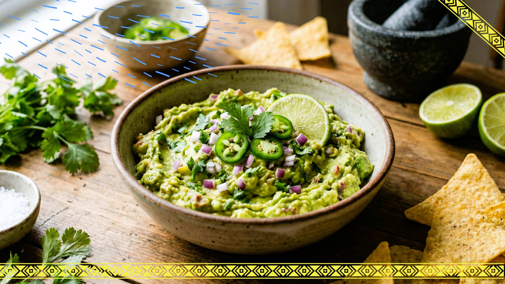

🏠 Home
Guacamole

Refreshing, tasty and creamy. This is what this Guacamole recipe delivers! For those that love it and for those
that have yet to try, this incredible recipe can amaze most food-lovers. It requires around 15
minutes for preparation and no more than 5 minutes to mix everything together! It can
serve up to 4 portions. Enjoy!
Ingredients
- 3 avocados - peeled, pitted, and mashed;
- 1 lime, juiced;
- 1 teaspoon salt or to taste;
- 2 roma (plum) tomatoes, diced;
- ½ cup diced onion;
- 3 tablespoons chopped fresh cilantro;
- 1 teaspoon minced garlic;
- 1 pinch ground cayenne pepper (Optional);
Step-by-step
- Gather the ingredients.
- Mash avocados, lime juiced, and salt together in a medium bowl; mix in tomatoes, onion, cilantro, and garlic.
- Stir in cayenne pepper. Serve immediately, or cover and refrigerate for 1 hour for improved flavor.